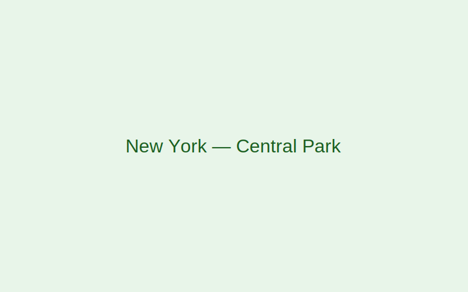
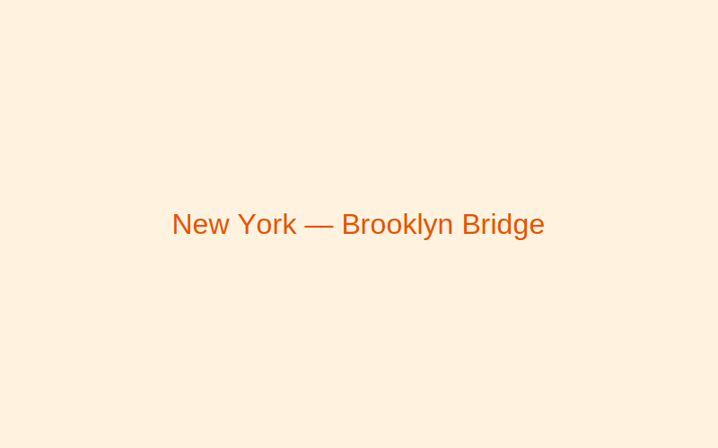
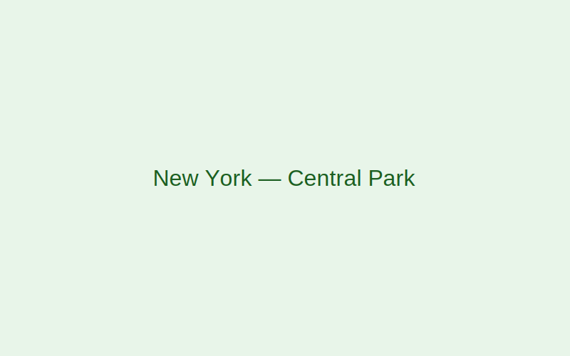
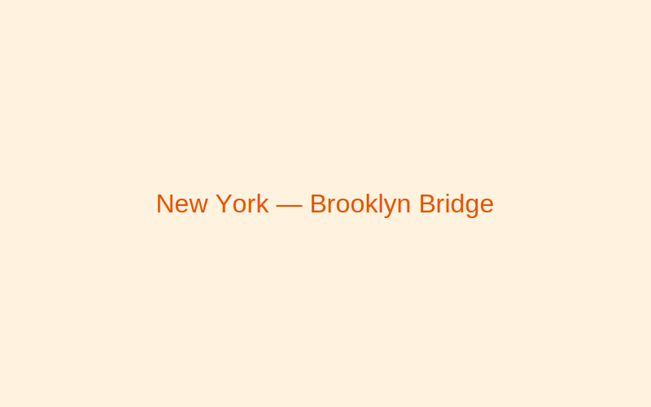

New York, USA
New York buzzes with energy 24/7. Discover iconic landmarks, diverse neighborhoods, and endless cultural experiences.
Gallery
 



Why visit
World-class museums, Broadway shows, and a global food scene make NYC an unforgettable destination.
Best time to visit
Spring and fall bring pleasant weather and vibrant city life; winter is magical during the holidays.
Top attractions
- Statue of Liberty & Ellis Island
- Times Square
- Central Park
- Metropolitan Museum of Art
- High Line
Local food & culture
- Bagels
- Classic chewy bagels with a variety of spreads and toppings.
- Pizza by the slice
- Foldable, thin-crust slices from corner pizzerias.
- Diversity
- NYC's cultural mix shines through festivals, neighborhoods, and cuisine.